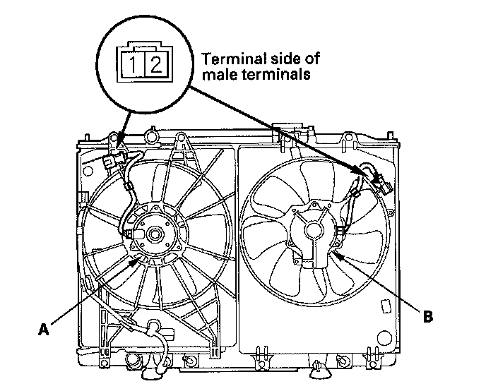

Radiator Cooling Fan Motor: Testing and Inspection
Fan Motor Test1. Disconnect the 2P connectors from the radiator fan motor (A) and condenser fan motor (B).

2. Test each motor by connecting battery power to No. 2 terminal and ground to No. 1 terminal.
3. If either motor fails to run or does not run smoothly, replace it.